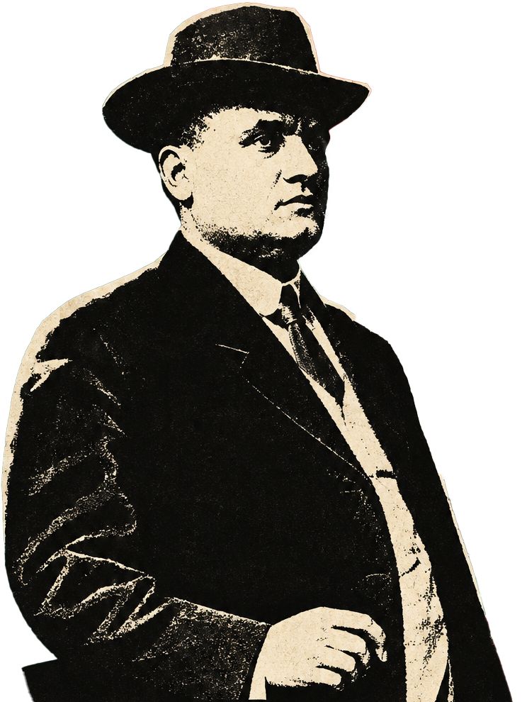
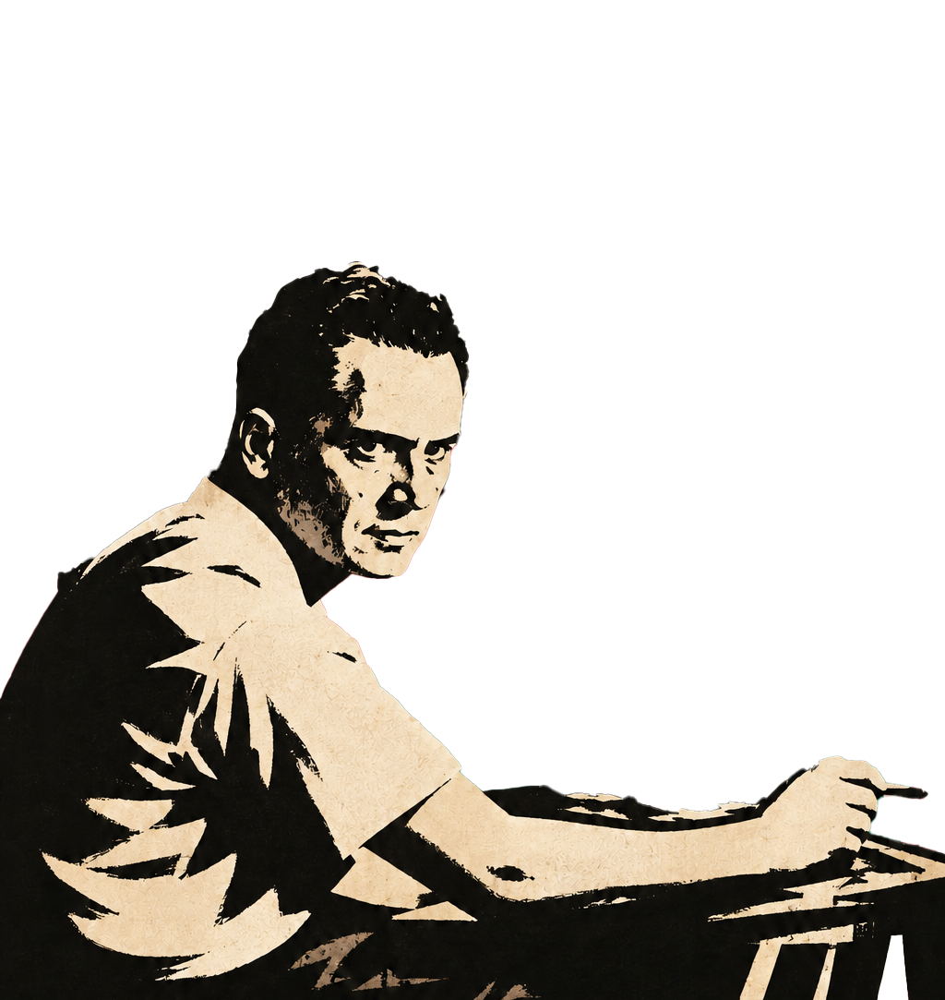
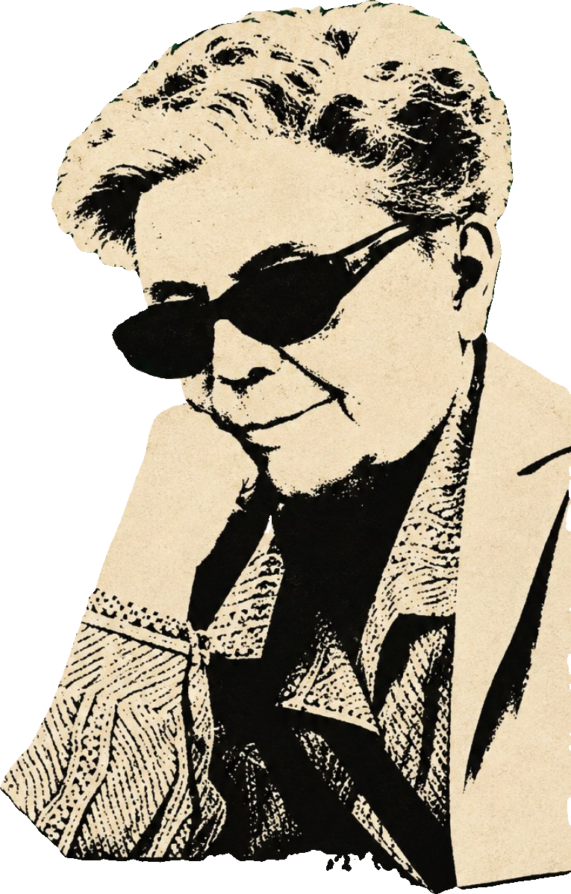
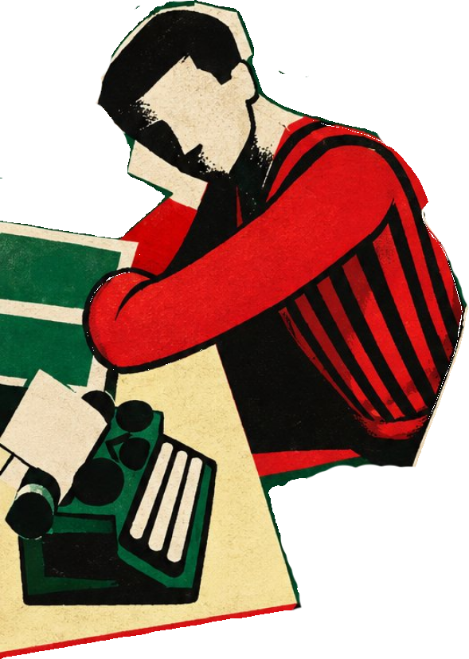

Pogolotti
Un apellido que marcó historia en La Habana
Tres generaciones —un urbanista italiano, un pintor de vanguardia y una crítica de arte— que escribieron la memoria de una ciudad.
De un barrio obrero en Marianao a los manifiestos futuristas de Europa: la historia de la familia Pogolotti es también la historia de La Habana.
Pulsa un año de la línea del tiempo o un retrato para conocer su historia


